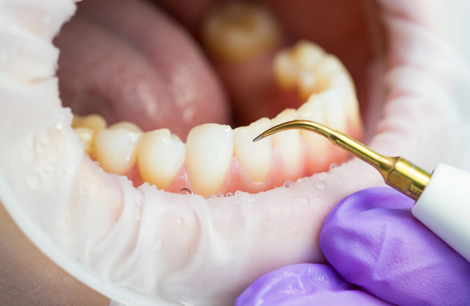

<!-- publication -->
<section id="blog">
  <div class="container mil-p-120-90">
    <div class="row justify-content-center">
      <div class="col-lg-12">
        <div class="mil-image-frame mil-horizontal mil-up">
          
        </div>
        <div class="mil-info mil-up mil-mb-90">
          <div>Date: &nbsp;<span class="mil-dark">Avril 2025</span></div>
        </div>
      </div>
      <div class="col-lg-8">
        <p class="mil-text-xl mil-dark mil-up mil-mb-60">
          Le détartrage dentaire est un acte de prévention courant, mais encore
          entouré de nombreuses idées reçues. Beaucoup de patients l’associent à
          une douleur inutile, à un traitement agressif ou pensent qu’il n’est
          utile qu’en cas de dents jaunes. Pourtant, il joue un rôle essentiel
          dans la santé bucco-dentaire. Dans ce blog, nous corrigeons les
          fausses croyances les plus fréquentes liées au détartrage, pour mieux
          comprendre son importance et ses effets réels.
        </p>

        <blockquote class="mil-up mil-mb-60">
          Le détartrage abîme les dents
        </blockquote>

        <!-- <h5 class="mil-up mil-mb-30">Understand the Field</h5> -->
        <p class="mil-up mil-mb-60">
          Faux. Le détartrage ne fragilise pas l’émail. Il consiste à éliminer
          mécaniquement le tartre, c’est-à-dire la plaque dentaire calcifiée,
          qui s’accumule sur et sous les gencives. Ce soin permet de prévenir
          les maladies parodontales (gingivite, parodontite). <br />➤ Ce qui
          abîme les dents, ce n’est pas le détartrage, c’est le tartre laissé
          trop longtemps en place.
        </p>

        <h5 class="mil-up mil-mb-30">
          Après un détartrage, mes dents deviennent sensibles, donc ça les a
          fragilisées
        </h5>
        <p class="mil-up mil-mb-60">
          Faux. La sensibilité temporaire après un détartrage est normale. Le
          tartre peut masquer des zones de l’émail exposées. Une fois retiré,
          ces zones peuvent devenir sensibles au froid ou au chaud, mais cela ne
          signifie pas que les dents sont abîmées. <br />➤ La sensibilité
          disparaît généralement en quelques jours.
        </p>

        <h5 class="mil-up mil-mb-30">
          Si mes dents sont blanches, je n’ai pas besoin de détartrage
        </h5>
        <p class="mil-up mil-mb-60">
          Faux. La blancheur dentaire ne reflète pas la santé des gencives. On
          peut avoir des dents visuellement propres mais du tartre sous la
          gencive, invisible à l'œil nu. <br />➤ Le tartre peut être incolore,
          ou logé dans des zones non visibles (espaces interdentaires,
          collets...).
        </p>
        <h5 class="mil-up mil-mb-30">
          Faire trop de détartrages, c’est mauvais pour les dents
        </h5>
        <p class="mil-up mil-mb-60">
          Faux. Le détartrage est recommandé 1 à 2 fois par an, selon la
          quantité de tartre produite. Il ne présente pas de risque si réalisé
          par un professionnel. <br />➤ Ce soin ne gratte pas l’émail, il
          décolle uniquement les dépôts calcifiés.
        </p>

        <h5 class="mil-up mil-mb-30">
          Un bon brossage suffit à éliminer le tartre
        </h5>
        <p class="mil-up mil-mb-60">
          Faux. Le brossage prévient la formation du tartre, mais ne peut pas
          l’enlever une fois qu’il est installé. Le tartre est une plaque
          bactérienne minéralisée, dure, qui nécessite un détartrage aux
          ultrasons ou avec des instruments spécifiques. <br />➤ Brosser
          soigneusement = moins de tartre à enlever, mais un contrôle reste
          indispensable.
        </p>
        <h5 class="mil-up mil-mb-30">Le détartrage fait bouger les dents</h5>
        <p class="mil-up mil-mb-60">
          Faux. Parfois, après un détartrage, une dent peut sembler mobile :
          cela ne vient pas du soin, mais d’un déchaussement déjà présent,
          masqué par le tartre. Le détartrage révèle simplement la situation
          réelle. <br />➤ Il s’agit d’un signe de parodontite avancée, qui
          nécessite un suivi.
        </p>
        <!-- <p class="mil-up mil-mb-60">Remember that creativity is at the core of graphic design. Embrace your creativity, experiment with different ideas, and think outside the box to create unique and impactful designs. Don't be afraid to take risks and push the boundaries of traditional design. Steve Jobs once said:</p> -->

        <blockquote class="mil-up mil-mb-60">
          <h5 class="mil-up mil-mb-30">Conclusion</h5>
          Le détartrage est un acte simple, rapide, et essentiel pour préserver
          la santé des gencives et éviter des complications à long terme. Les
          fausses croyances qui l’entourent peuvent freiner son adoption, voire
          retarder des soins nécessaires. Un entretien régulier et une bonne
          information permettent d’agir à temps et d’éviter les maladies
          parodontales.
        </blockquote>
      </div>
    </div>
  </div>
</section>
<!-- publication end -->
